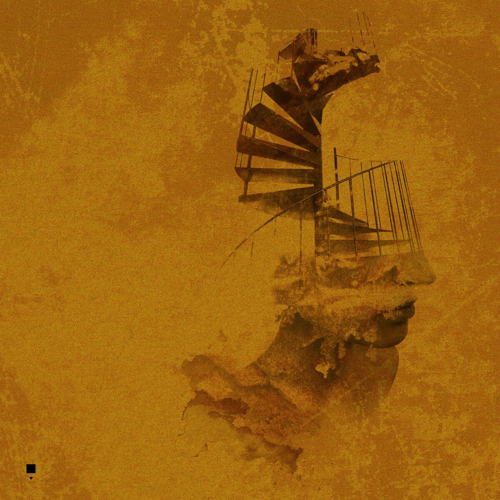

III · ÚLTIMO

Último álbum
2024
Quema mi garganta
Un disco que no pide permiso. Seis canciones para perseguidores, ídolos rotos y voces que se rompen cantando. Acompañado del manifiesto Tragedia y fiesta.
- 01El perseguidorVideo
- 02Sangre joven, sangre fresca
- 03Ídolos
- 04Aúlla
- 05Así que quieres ser cantante
- 06Título desconocido